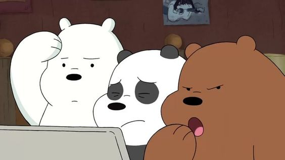
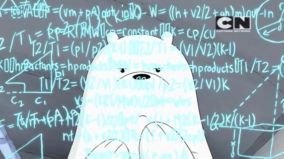
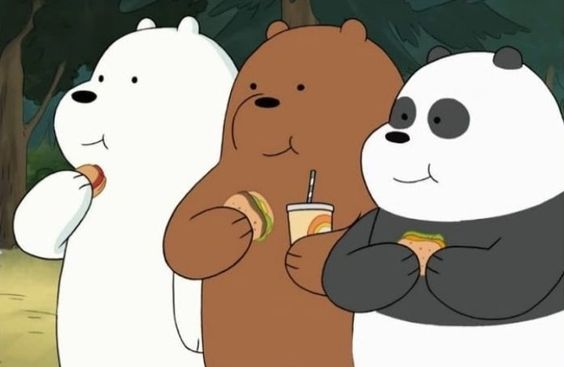
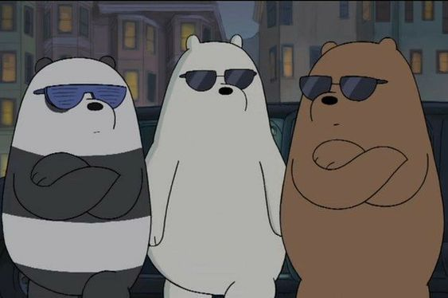

Imagenes de estos ositos
   #Polar para presidente
Lista sobre los escandalosos
Datos interesantes sobre los Escandalosos
Creado por Diana
- Salieron junto con Monsta X
- No abandones a polar
- Polar require mas papas gratis
Lista de cosas que no le gustan a los Escandalosos
- La amsiedad
- Los problemas y conflictos
Historia
Los Osos (The Bears en Estados Unidos) son una familia adoptiva de tres osos de especies separadas y son la cara de la serie original de Cartoon Network, Escandalosos. La familia incluye a los tres personajes principales: Pardo, Panda y Polar, cada uno con sus propias personalidades, intereses y talentos. Han estado juntos desde que eran oseznos, como se reveló por primera vez, pero no oficialmente en el webcómic The Three Bare Bears y en él Piloto, y oficialmente en el episodio Burrito. Cuando viajan forman la Torre de Osos, generalmente se forman con Pardo en la parte superior, Panda en el medio y Polar en la parte inferior, de acuerdo con sus respectivas edades.Se conocieron por primera vez en las vías de un tren cuando solo eran unos oseznos (Como se muestra en un flashback en Escandalosos: La Película). Luego de lograr desatorar a Panda y escapar de un tren formando la Torre de Osos y prometen que serán hermanos para siempre. Ellos han estado juntos para obtener un hogar. Mientras tanto, como se vio en El Camino, ellos llamaron a una Caja su hogar, la cual tenía por afuera escrito: Osos Gratis (Free Bears en Estados Unidos). En el mismo episodio, ellos perdieron su caja, así que llegaron a una fábrica de cajas, para así obtener otra, finalmente en el episodio, una persona pide un envío, y ellos se meten en la caja, y fue así como llegaron a la Bahía de San Francisco, California.
Datos sobre los ositos
Pardo: Al ser un oso pardo, está familiarizado con la zona del bosque en la que viven los osos. Es el líder de los tres y es visto como tal. Hace todo lo posible por hacer lo correcto para su beneficio y el de su familia, pero a veces puede dejarse llevar. Al crecer sin tutores, al igual que sus hermanos, creció tratando de ser un hermano mayor modelo, aunque su comportamiento irresponsable e infantil a menudo le impide hacer un buen trabajo. Panda: Panda parece tener más conocimiento en cosas relacionadas con la tecnología y cosas del mundo oriental. Le gusta estar mucho en el celular. Él es el hermano del medio y, como dijo Pardo, es el vínculo que los mantiene a todos juntos. Parece ser el más delicado del trío, estando bastante tecnológico y, como Pardo también describió, lindo. Aun así, se preocupa por sus hermanos y tratará de ayudar siempre en lo que pueda. Polar: Polar es el más joven del trío, pero sin duda es el más duro de ellos. Siendo el más maduro y responsable de ellos, tiende a hacer la mayoría de las tareas de la cueva, y realmente no le importa hacerlo. A pesar de su disposición a colaborar donde los demás no lo hacen, todavía se toma unos días libres para relajarse y descansar. No solo es un oso inteligente y fuerte, es esencial para la hermandad de los osos.
Torre de Osos
Ellos crean una Torre de Osos, como forma para poder trasladarse. Como base está Polar, luego Panda y en la parte superior está Pardo. Se creía que era en sentido de fuerza, pero no, es el orden en edad: Pardo es el mayor (Arriba), Panda (Medio) y Polar, el menor (Base). Esto se confirma en El Oso de Arriba. Cada uno de ellos tiene una actitud diferente. Los tres han demostrado beber café. Según una declaración hecha por Pardo, ellos hacen y beben café juntos. En el episodio Café Cueva se revela que Polar no aguanta la cafeína, y si la toma se podría decir que se vuelve loco. Según Panda en el episodio Chloe, los osos tienen todo tipos de sentimientos, y eso es algo hermoso. Daniel Chong confirmo en Twitter que si ellos no fueran osos serían gatos.
En este Link para saber mas de paginas web

¿Te gustan los escandalosos?
¿Con cual te identificas mas?